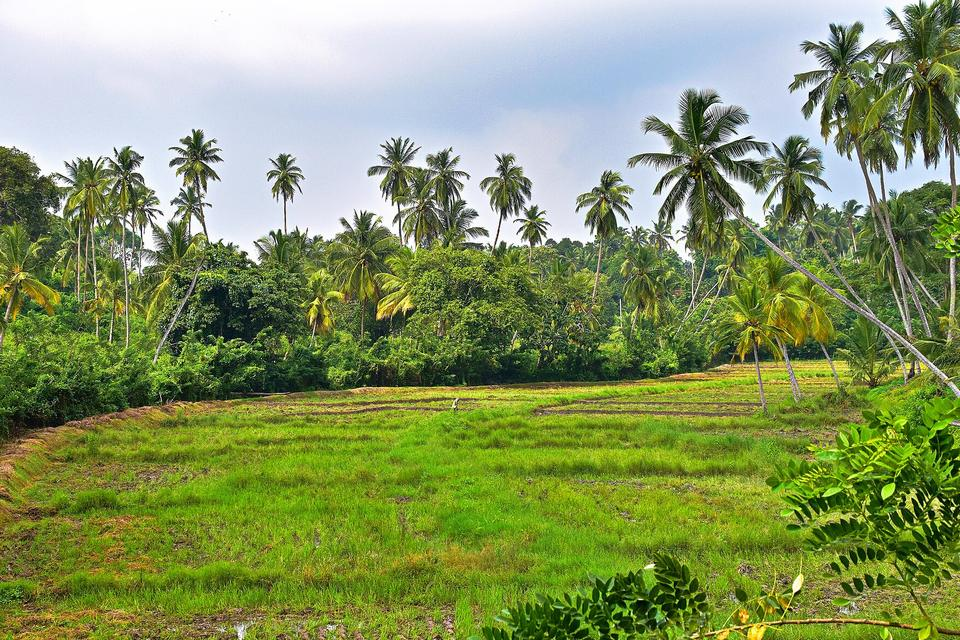
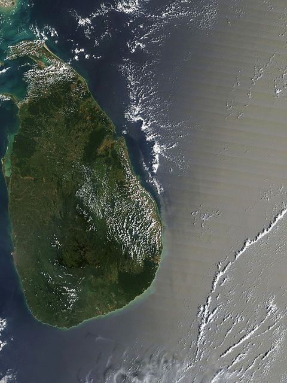
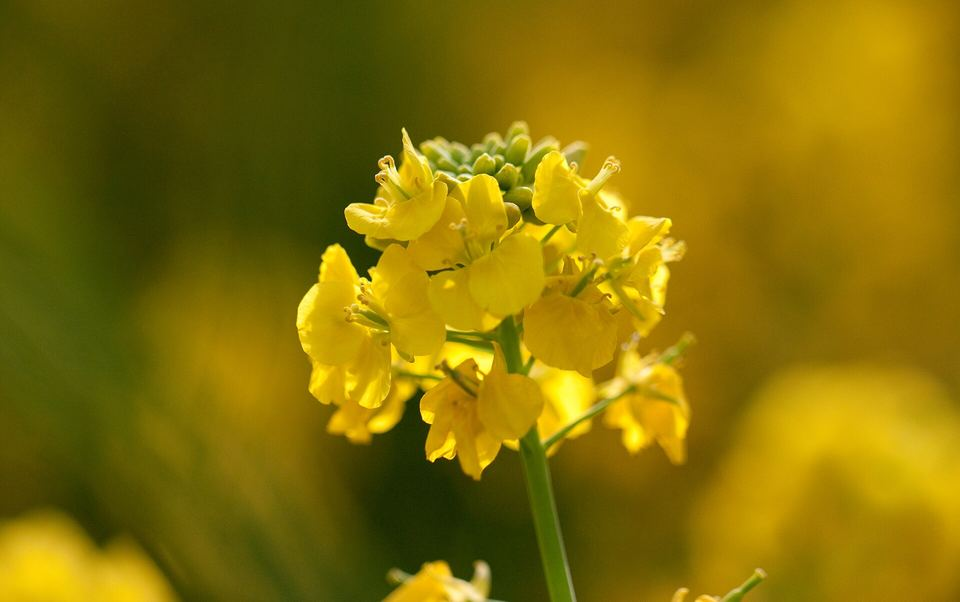
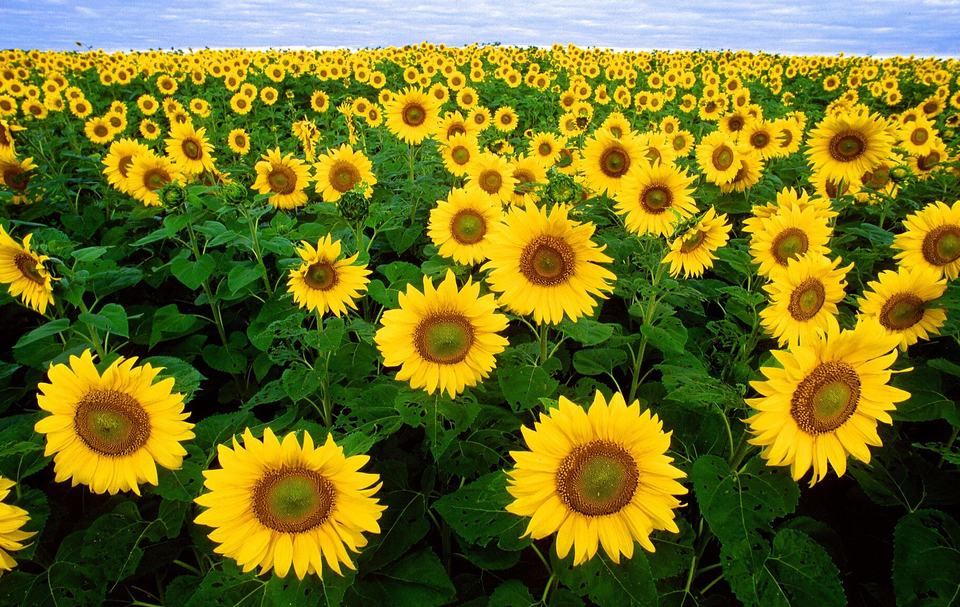
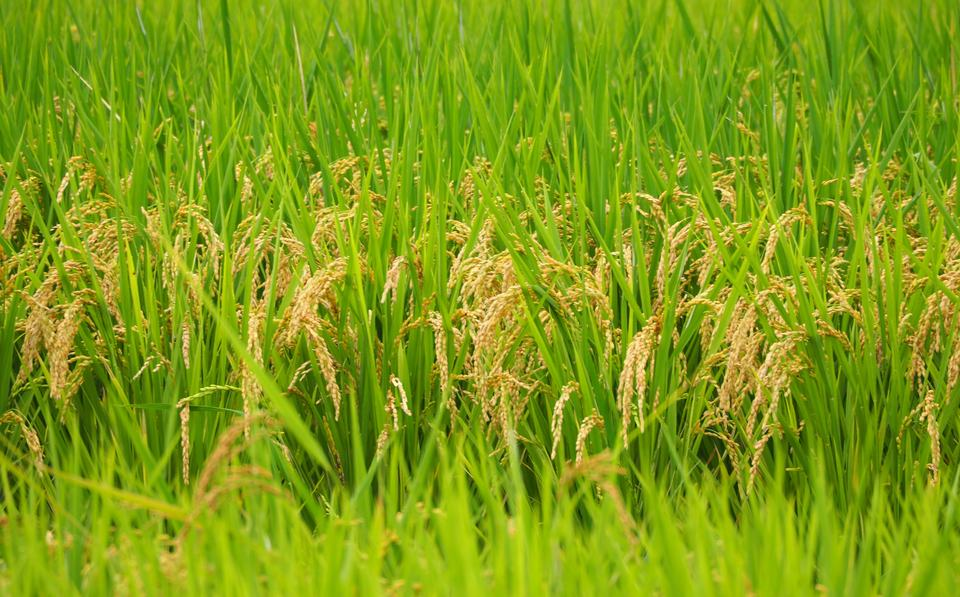
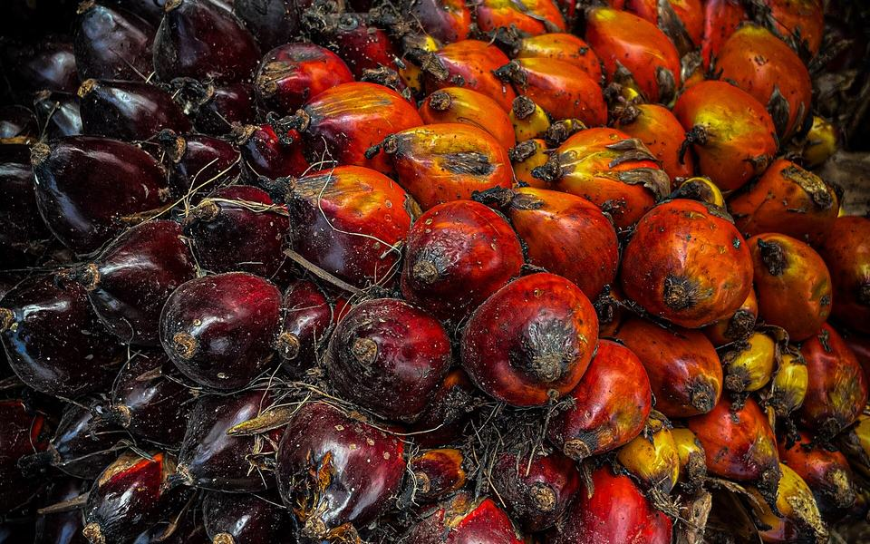
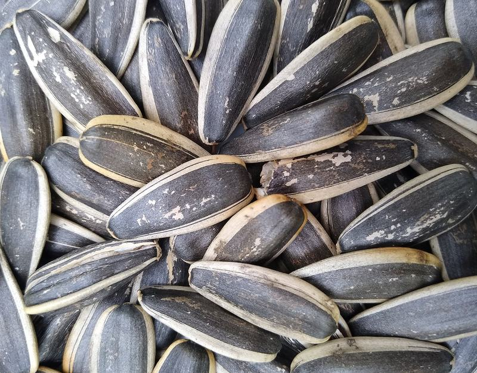

Solvent extraction plant / Edible oil refinery / Sri Lanka
Every last drop, from every seed.
Agro Extract Lanka runs a solvent extraction plant and an edible oil refinery. We turn canola, sunflower, rice bran, palm and other oilseeds into clean, stable oils and feed-grade meal.
Agro Extract Lanka is a Sri Lankan processor of edible oils. Our solvent extraction plant recovers the oil that pressing leaves behind. Our refinery turns that crude oil into a clean, stable product for kitchens and food factories.
Running both stages ourselves means we answer for quality from the day seed arrives to the day oil is loaded.
Extract
Food-grade hexane draws the oil out of flaked seed, bran and press cake. The solvent is recovered and reused.
Refine
Degumming, neutralising, bleaching, dewaxing and deodorising bring crude oil up to food grade.
Supply
Refined and crude oils for food makers, and de-oiled meal for animal feed.


Sri Lanka from orbit. The teardrop island gives our mark its drop.
Our oils
Four core oils, and room for more.
Each is available crude or fully refined. The bars show a typical fatty-acid profile, so you can match the oil to the job.

Canola oil
Pale, neutral in taste and the lowest in saturated fat of the common cooking oils. A dependable all-rounder for frying, baking and dressings.
Typical fatty-acid profile
Saturated
7%
Monounsaturated
61%
Polyunsaturated
32%
Frying
Baking
Dressings
Margarine

Sunflower oil
Light gold, clean on the palate and naturally rich in vitamin E. Dewaxed so it stays clear on the shelf.
Typical fatty-acid profile
Saturated
11%
Monounsaturated
20%
Polyunsaturated
69%
Frying
Snack foods
Mayonnaise
Bottling

Rice bran oil
Drawn from the bran layer of the rice grain. A high smoke point and natural oryzanol make it a favourite for deep-frying and stir-frying.
Typical fatty-acid profile
Saturated
23%
Monounsaturated
42%
Polyunsaturated
35%
Deep-frying
Stir-frying
Snack foods
Blending

Palm oil
Semi-solid at room temperature and very stable under heat. The workhorse fat for bakery, confectionery, noodles and industrial frying.
Typical fatty-acid profile
Saturated
50%
Monounsaturated
40%
Polyunsaturated
10%
Bakery fats
Frying
Noodles
Confectionery
Fatty-acid figures are typical values for standard commodity grades, shown as a share of total fatty acids. Actual composition varies with variety, origin and season. Ask us for the specification of the grade you need.

Processing another oilseed?
Our plant is built for more than four crops. Talk to us about any of these, or about something that is not on the list.